第 1 页 · 项目8
项目8
扣子AI编程入门
工信精品人工智能系列教材
《智能体项目开发实战（扣子）（微课版）》
第 2 页 · 目录
目录
01
项目引入与教学目标
02
认识扣子AI编程
03
同步训练8-1
04
开发AI编程项目
05
案例实战8-1
06
课后实践
项目 8 扣子AI编程入门
第 3 页 · 引入
引入
项目目标与引入
在前面项目中，我们学习了基于低代码模式创建智能体和应用——通过可视化界面"拼装"AI项目。
随着开发范式进入"AI主导、人来辅助"的新阶段，扣子2.0推出了全新的AI编程开发模式。
开发者只需用自然语言清晰描述意图，AI就能自动完成从代码生成、调试到部署的完整闭环，让开发过程更聚焦于创意与核心逻辑。
开发范式转变
低代码模式
可视化"拼装"
AI编程模式
自然语言"描述"
完整闭环
生成→调试→部署
项目 8 扣子AI编程入门
04
知识目标
理解扣子AI编程的核心概念及其与低代码开发的区别
了解扣子AI编程的基本开发流程与核心工具
了解技能（Skill）与集成服务如何为AI项目扩展能力
能力目标
能够通过自然语言描述完成AI编程项目的创建
能够对AI编程项目通过对话交互实现功能迭代与优化
能够在AI编程项目中调用内置集成服务
素养目标
培养"描述即开发"的AI编程思维
加强项目不断迭代优化的工程意识
树立AI应用的成本与数据合规意识
第 4 页 · 8.1
8.1
认识扣子AI编程
理解AI编程的核心概念、与低代码开发的差异，以及开发环境工具
第 5 页 · 8.1.1
8.1.1
什么是AI编程
扣子AI编程是一站式云端AI编程开发平台。用自然语言"描述"项目需求，让AI写代码，就像点菜下单。
两种开发模式对比
低代码模式
用组件"拼装"出智能体或应用
就像搭积木
需要1-2小时完成一个项目
AI编程模式
用自然语言"描述"项目需求
就像点菜下单
AI几分钟内生成完整项目代码
项目 8 扣子AI编程入门
07
开发效率极高
降低技术门槛
代码高度定制
迭代优化便捷
AI编程的优势
需求描述依赖性强
调试需要技术理解
复杂项目需要拆解
AI编程的局限性
第 6 页 · 8.1.2
8.1.2
AI编程与低代码开发的差异
| 对比项 | AI编程 | 低代码开发 |
| 操作方式 | 自然语言描述 | 可视化配置（单击、拖曳） |
| 产物形态 | 代码文件 | 配置信息 |
| 开发速度 | 快速 | 中等 |
| 灵活性 | 高度灵活 | 受组件限制 |
| 学习难度 | 需学习需求描述，有编程基础可深度定制 | 需学习平台操作，无需技术背景 |
| 维护方式 | 修改代码 | 修改配置 |
| 适用人员 | 所有人（有技术背景更佳） | 业务人员、产品经理、非技术人员 |
注意：两种模式的产物形态不同，不能互相转换编辑。
项目 8 扣子AI编程入门
10
第 7 页 · 8.1.2
8.1.2
两种开发模式的适用场景
| 场景类型 | 推荐方式 | 原因 |
| 知识问答类智能体 | 低代码开发 | 标准化程度高，配置即可 |
| 简单流程类智能体 | 低代码开发 | 工作流编排更直观 |
| 复杂逻辑处理 | AI编程 | 代码实现更灵活 |
| 需要深度定制 | AI编程 | 可自由修改代码 |
| 快速原型验证 | AI编程 | 生成速度快 |
学习建议：建议从低代码开发入手，逐步过渡到AI编程。低代码是当前绝大多数智能体开发平台的通用开发方式，其设计思维具有通用性，学习它更能让我们理解如何使用AI能力，为学习AI编程打下坚实基础。
项目 8 扣子AI编程入门
11
第 8 页 · 8.1.3
8.1.3
扣子AI编程开发环境与工具
扣子AI编程提供基于Web的AI编程开发环境，以浏览器为载体，自带编程所需的基础功能，提供开箱即用的编程体验。
项目 8 扣子AI编程入门
12
代码编辑器
内置支持多种编程语言的代码编辑器
提供语法高亮、代码格式化等功能
实时查看或手动编辑AI生成的代码文件
Web终端
模拟Linux终端环境
可执行npm、python等命令
支持各类命令行操作和调试
云端沙箱
为每个AI项目创建互相隔离的云端沙箱
包含运行代码所需的操作系统、依赖和资源
支持实时预览网页和项目效果
AI驱动
AI深度嵌入开发全流程
支持自然语言生成代码、代码补全、智能纠错
能自主完成复杂的开发任务，即时运行并展示效果
第 9 页 · 同步训练8-1
同步训练8-1
创建智能体并熟悉AI编程环境
通过开发一个简单的问候助手智能体，体验扣子AI编程的交互式开发环境。
创建步骤
01
访问扣子AI编程主页
切换到"智能体"选项卡
02
在文本框中输入提示词
描述智能体功能需求
03
单击"发送"按钮
AI自动设计并创建项目
04
查看开发进展
等待项目生成完成
提示词示例
帮我开发一个简单的问候助手智能体。
功能：用户输入姓名，智能体生成一句个性化的问候语。
例如：用户输入"小明"，智能体返回"你好，小明！很高兴认识你，希望你今天过得愉快！"
项目 8 扣子AI编程入门
15
第 10 页 · 同步训练8-1
同步训练8-1
创建智能体并熟悉AI编程环境
项目 8 扣子AI编程入门
15
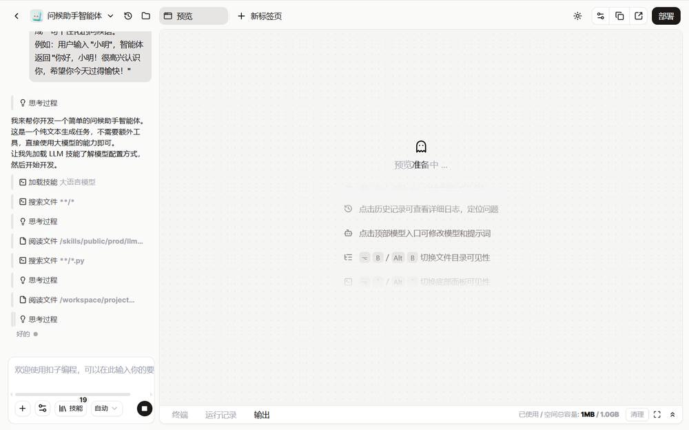
创建智能体
第 11 页 · 同步训练8-1
同步训练8-1
了解扣子AI编程环境
项目 8 扣子AI编程入门
16
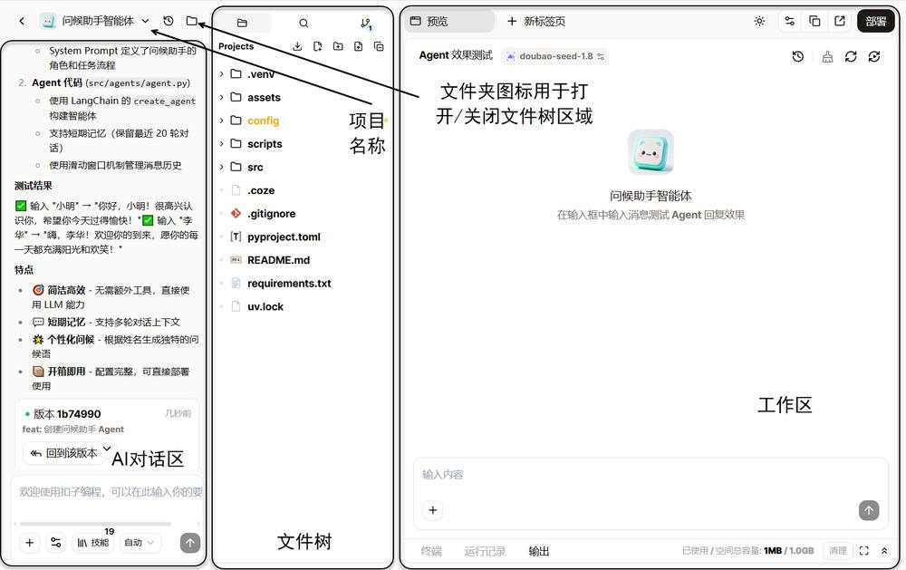
第 12 页 · 同步训练8-1
同步训练8-1
了解扣子AI编程环境
扣子AI编程环境操作界面从左到右依次为三大区域：
| 区域 | 说明 | 主要功能 |
| AI对话区 | 开发者和扣子AI编程的对话窗口，通过自然语言下达命令 | 编辑消息、重新生成、上传文件、生成配置、添加到对话 |
| 文件树 | 可视化展示项目目录结构，查看AI生成的代码文件 | 管理文件及文件夹、导出项目、上传文件、检索代码 |
| 工作区 | 主面板，集成代码编辑、运行调试等多种功能 | 代码编辑、界面预览、执行命令、查看输出 |
提示：单击左上角文件夹图标可打开/关闭文件树区域。左上角显示项目名称。
项目 8 扣子AI编程入门
16
第 13 页 · 同步训练8-1
同步训练8-1
体验AI编程基本操作
01
使用代码编辑器查看代码
在文件树中单击指定代码文件，即可在工作区查看并编辑。产物是代码文件，包含项目代码、智能体代码、配置文件和依赖声明。
项目 8 扣子AI编程入门
17
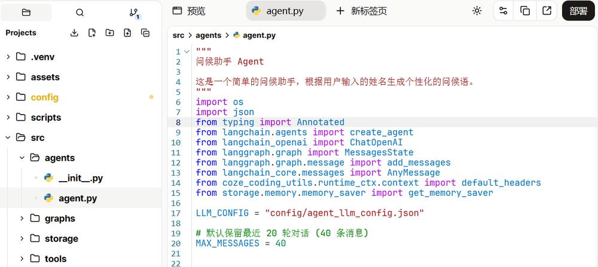
第 14 页 · 同步训练8-1
同步训练8-1
体验AI编程基本操作
02
在预览区域测试功能
切换到"预览"页面，输入测试数据，观察智能体的回复效果。可实时验证功能是否符合预期。
项目 8 扣子AI编程入门
17
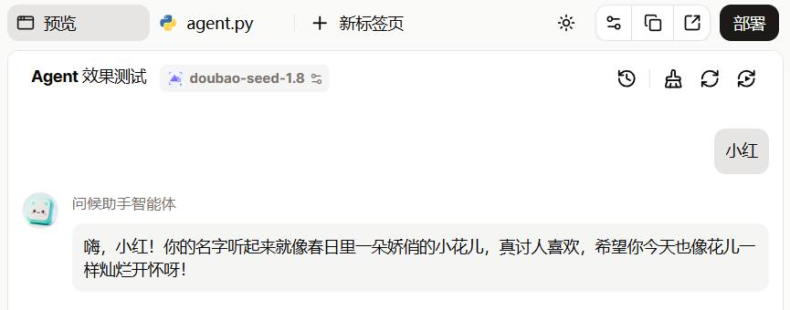
第 15 页 · 同步训练8-1
同步训练8-1
体验AI编程基本操作
03
查看运行记录（日志）
单击工作区底部"运行记录"，追踪执行历史。可按状态或时间筛选，错误信息帮助定位问题。
项目 8 扣子AI编程入门
17
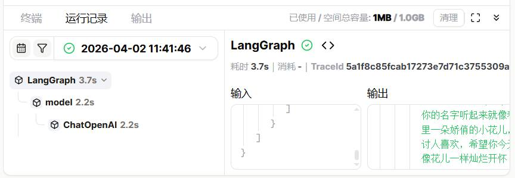
第 16 页 · 同步训练8-1
同步训练8-1
体验AI编程基本操作
04
尝试对话式修改项目
在AI对话区输入修改需求，AI自动修改代码。文件树中的代码文件会实时变化，预览页面同步更新。
项目 8 扣子AI编程入门
17
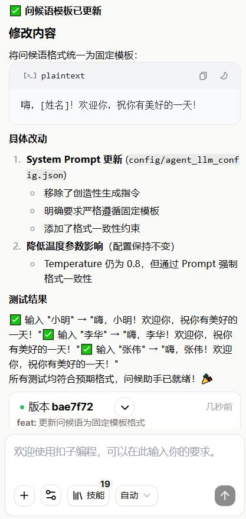
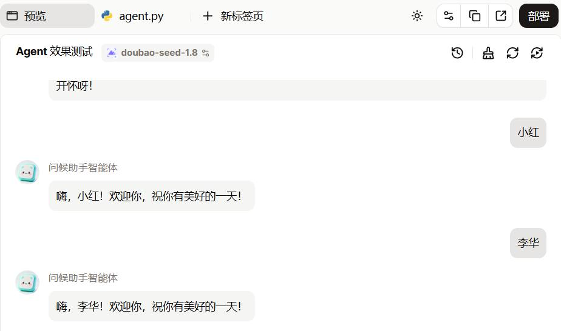
第 17 页 · 8.2
8.2
开发AI编程项目
掌握AI编程项目的完整开发流程、需求描述方法与集成服务
第 18 页 · 8.2.1
8.2.1
扣子AI编程的基本开发流程
01
输入需求
在AI编程主页文本框中清晰详细地描述项目功能、界面设计、业务逻辑等要求
02
预览与调试
AI分析需求、规划步骤、生成代码，自动构建并启动项目，在预览页面测试效果
03
改进项目
通过对话告诉AI需要修改的地方，AI自动修改代码并再次调试，每次重要修改自动生成版本
04
部署
部署到生产环境，让创意走向实际应用
提示：开发、测试、线上使用AI编程项目时，编程任务、调用大模型、联网搜索、图像生成等内置集成服务将消耗用户的扣子积分。
"描述—预览—对话修正"循环
扣子AI编程是一个"描述—预览—对话修正"的循环过程。不要期望一次成功，需要不断地与AI协作，通过多轮交互来完善和优化项目。
部署后如果发现问题，仍然可以通过对话的方式进行修改和更新。
项目 8 扣子AI编程入门
19
第 19 页 · 8.2.2
8.2.2
如何高效描述需求
清晰、准确地描述需求是扣子AI编程生成高质量代码的关键。
需求描述五要素
1
功能目标
项目要实现什么功能
2
界面说明
项目界面设计
3
输入说明
用户输入什么
4
输出说明
项目输出什么
5
特殊要求
其他需要说明的要求
描述原则
先说整体，再说细节
描述用户使用流程
提供界面参考描述
说明数据和AI能力需求
项目 8 扣子AI编程入门
20
第 20 页 · 8.2.3
8.2.3
技能与集成服务
AI编程项目需要调用外部工具完成具体任务。技能是我们能看到的工具，集成服务是这些工具背后的技术实现。
技能（Skill）
用于扩展智能体功能的模块化能力
如果把智能体看作机器人，技能就是它可以选装的各种工具
扣子AI编程全面支持技能的开发与使用，可用自然语言开发、使用技能
所有集成服务均有配套的官方技能，AI会自行判断并加载
提示：AI编程主页文本框底部的"技能"按钮显示当前加载的技能数量。不同项目可使用的官方技能并不完全一样，AI会根据项目类型自动添加匹配的技能。
项目 8 扣子AI编程入门
21
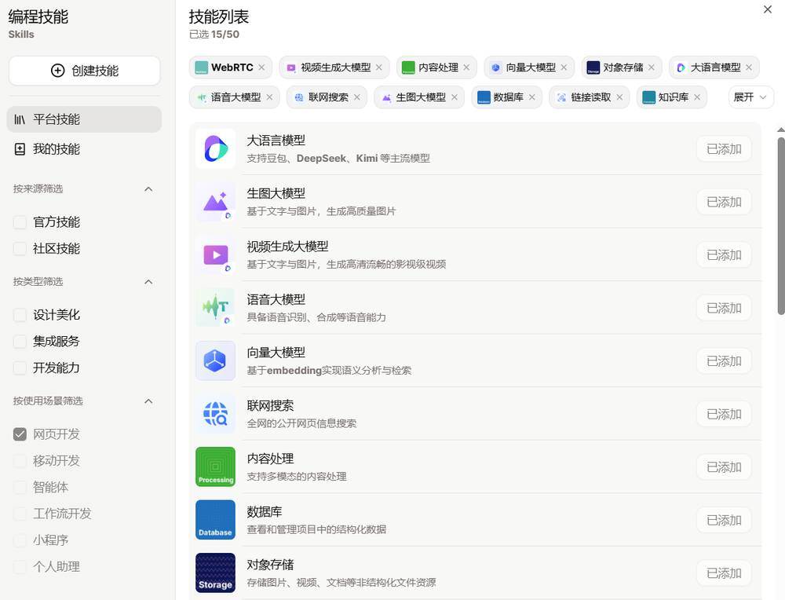
第 21 页 · 8.2.3
8.2.3
技能与集成服务
AI编程项目需要调用外部工具完成具体任务。技能是我们能看到的工具，集成服务是这些工具背后的技术实现。
集成服务
一组可供扣子AI编程调用的工具
涵盖AI模型、数据库、存储、联网搜索、消息推送等能力
目前均有配套的官方技能
开发者只需描述业务意图，AI便会加载对应技能接入服务
项目 8 扣子AI编程入门
21
内置集成
扣子AI编程封装的标准化能力，开箱即用
无须提供API密钥或进行任何配置，直接用来增强项目能力
需要数据持久化时，AI会自动生成数据模型和操作代码
外部集成
由扣子AI编程官方提供的第三方集成服务
使用前需由空间管理员在工作空间中完成一次性配置
配置完成后，AI会以技能方式调用这些外部服务
第 22 页 · 案例实战8-2
案例实战8-2
旅行攻略生成器——需求描述
通过完整案例体验AI编程项目从需求描述到部署的全过程，学习使用联网搜索集成服务。
功能说明
用户输入城市名称，生成该城市的旅行攻略
系统需要联网搜索景点门票价格，确保信息实时准确
界面设计
顶部标题"旅行攻略生成器"
中间文本框 + "生成攻略"按钮
单击按钮后显示攻略内容
风格：简洁清新，适合旅游主题
输出内容
必去景点：名称、简介、门票价格（联网搜索获取）
特色美食：3~5个当地美食及简介
三日游行程：合理安排的每日行程
需求描述关键点
1. 功能描述中明确说明需要联网搜索景点门票价格 — 这是触发联网搜索集成服务的关键命令
2. 输出格式指定景点信息包含"门票价格"字段 — 确保AI调用大模型生成内容时包含价格信息
AI任务分析：核心功能 = 城市输入 → 联网搜索景点价格 → 大模型生成攻略 | 技术栈 = Next.js | 所需技能 = web-search + llm
项目 8 扣子AI编程入门
24
第 23 页 · 案例实战8-2
案例实战8-2
旅行攻略生成器—— 预览测试
代码生成完毕后，单击"预览"按钮查看网页效果。检查标题、文本框、按钮是否存在，布局是否合理。输入城市名称（如"成都"），单击"生成攻略"，验证结果是否符合预期。加入联网搜索后，门票价格信息更加准确。
项目 8 扣子AI编程入门
25
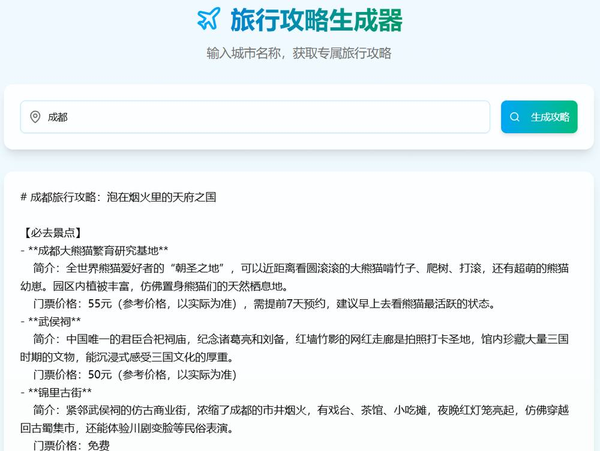
第 24 页 · 案例实战8-2
案例实战8-2
旅行攻略生成器——改进优化
1
显示加载提示
联网搜索增加了响应时间，添加加载状态提示改善用户体验
"正在搜索景点信息，请稍候..."
项目 8 扣子AI编程入门
25
第 25 页 · 案例实战8-2
案例实战8-2
旅行攻略生成器——改进优化
2
统一价格格式
收费景点："成人票XX元（参考价格，以实际为准）"
免费景点："免费开放"
无信息："请查询官方渠道"
项目 8 扣子AI编程入门
25
3
优化结果展示
景点用表格展示（名称、简介、门票）
美食用卡片列表展示
行程用时间轴形式展示
核心理念：扣子AI编程是一个"描述—预览—对话修正"的循环过程。我们需要不断地与其协作，不要期望一次成功。通过多轮交互来不断完善和优化项目。
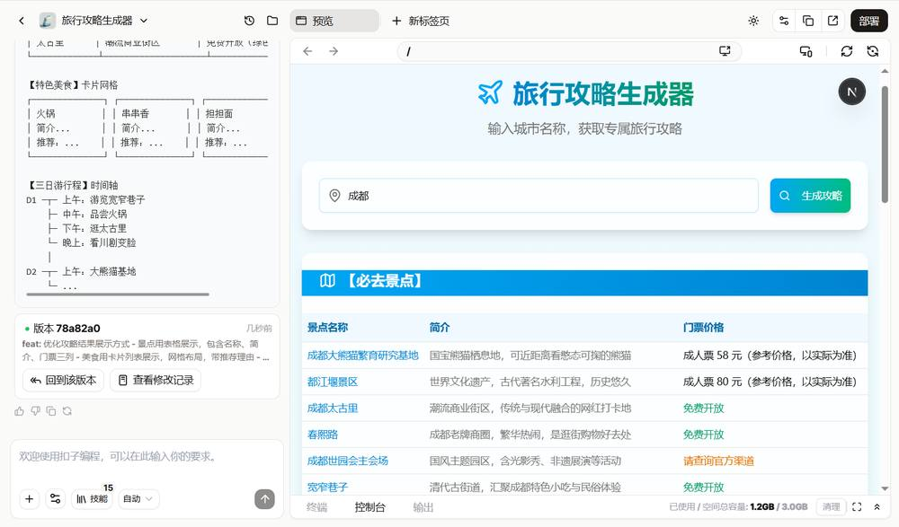
第 26 页 · 案例实战8-2
案例实战8-2
旅行攻略生成器—— 部署
01
单击AI编程页面右上角"部署"按钮
02
选择部署版本和域名（默认使用扣子提供的统一域名）
03
单击"开始部署"，等待几分钟完成部署
04
获取域名，项目正式上线，可分享给他人访问
项目 8 扣子AI编程入门
26
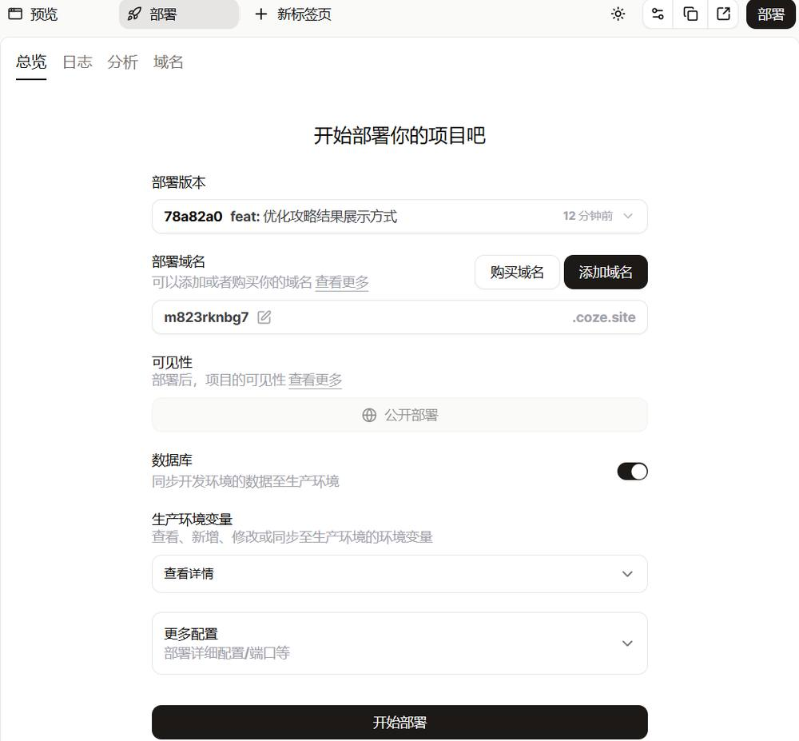
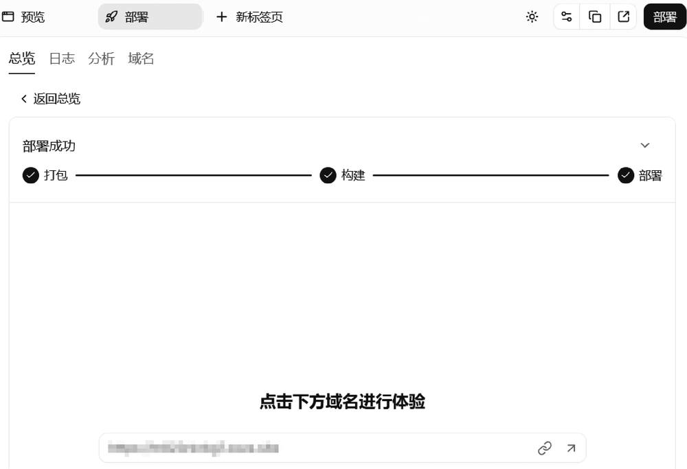
第 27 页 · 案例实战8-2
案例实战8-2
旅行攻略生成器—— 持续改进
部署后的持续改进
问答模式
查看代码实现，了解门票价格的获取方式
Agent模式
发现问题后，输入修改请求让AI自动修改代码
再次部署
修改完成后重新部署，新网址会有所不同
示例：发现门票价格不是最新时间 → 问答模式定位到后端API文件 → Agent模式请求"将联网搜索景点的时间改为当前时间" → 测试验证 → 再次部署
项目 8 扣子AI编程入门
26
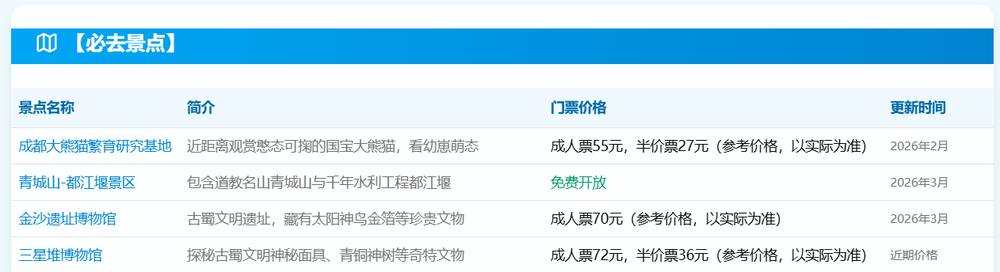
第 28 页 · 案例实战8-2
案例实战8-2
旅行攻略生成器—— 版本控制
每次与扣子AI编程对话修改代码，都会自动生成历史版本，方便精细化版本控制与回退。
自动生成历史版本
每次提交修改都会生成一个历史版本
版本按时间倒序排列
最底部为初始化时自动生成的初始版本（Initial commit）
代码变更时自动生成历史版本（关键词为 feat）
项目 8 扣子AI编程入门
27
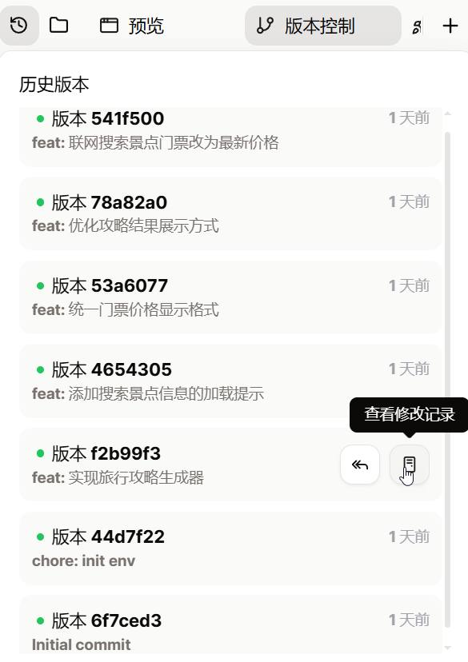
第 29 页 · 案例实战8-2
案例实战8-2
旅行攻略生成器—— 版本控制
每次与扣子AI编程对话修改代码，都会自动生成历史版本，方便精细化版本控制与回退。
版本操作
单击项目名称右侧版本图标，弹出历史版本列表
每个版本都有编号，可回滚到该版本
可查看修改记录，了解每个版本的变更内容
项目 8 扣子AI编程入门
27
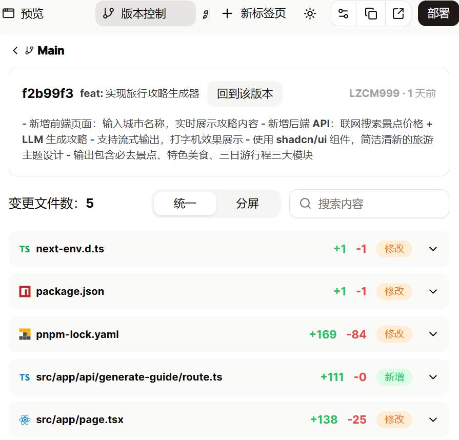
第 30 页 · 8.3
8.3
课后实践
巩固所学，动手实践
第 31 页 · 8.3
8.3
课后实践任务
01
天气查询智能体
用户输入城市名称，智能体显示该城市的实时天气、温度和体感描述
界面需简洁美观
完成后查看并说明生成的代码文件结构
02
个人博客生成器
用户输入博客主题和关键词，生成结构完整的博客文章草稿
包含标题、段落和要点
尝试在需求中加入文章风格控制（如"技术风格"或"生活随笔"）
03
待办事项管理应用
帮助用户管理日常任务，支持添加、完成和删除待办事项
要求具有数据持久化能力
即使关闭浏览器后再打开，待办事项列表仍不丢失
04
学习笔记整理工作流
自动整理杂乱的学习笔记，生成结构清晰、重点突出的整理笔记
体验AI编程在工作流类型项目中的应用
练习需求描述中的输出格式控制
项目 8 扣子AI编程入门
29
第 32 页 · 项目总结
项目总结
从"拼装"到"描述"，开启AI主导的新一代开发模式
认识AI编程
概念与差异
熟悉环境
界面与工具
掌握流程
需求与集成
实战演练
部署与优化
动手实践
巩固提升
描述即开发，对话即迭代 —— 开始你的AI编程之旅！
人民邮电出版社 | 工信精品人工智能系列教材
《智能体项目开发实战（扣子）（微课版）》